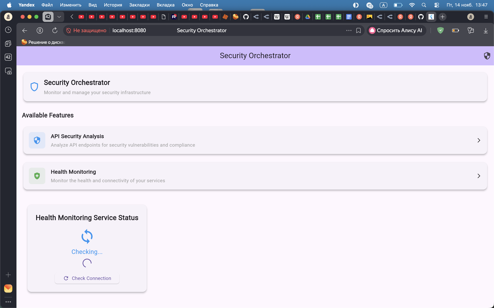
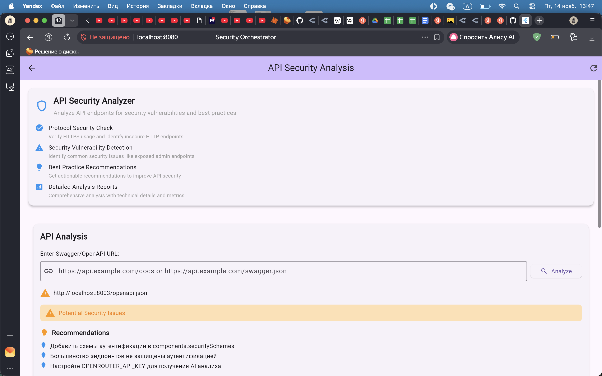
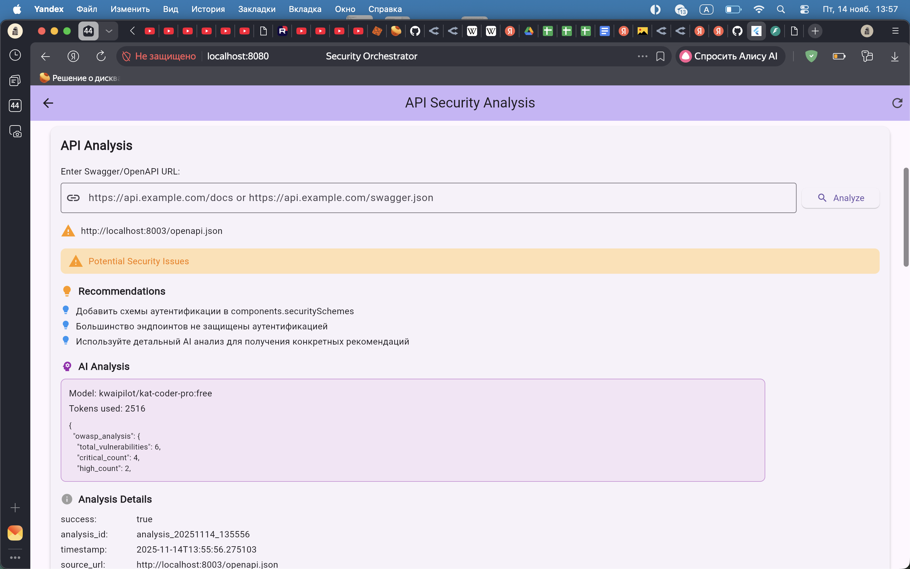
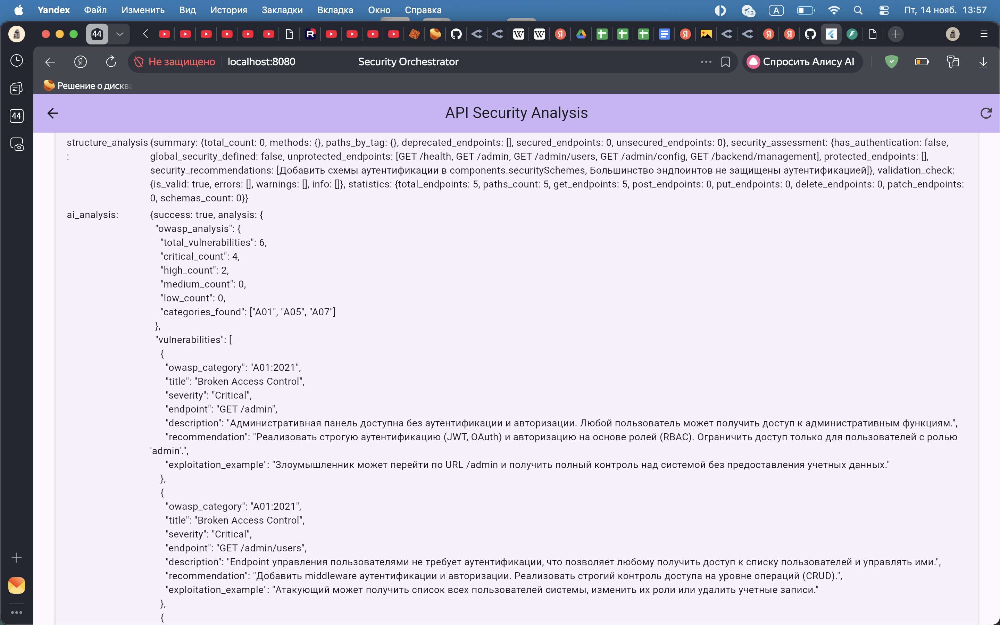
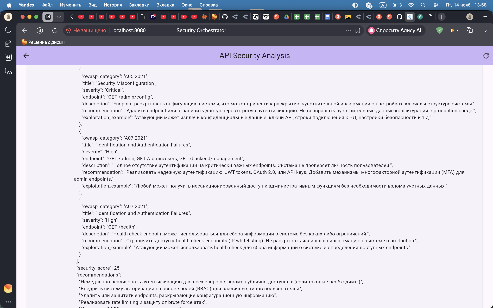

SecurityOrchestrator
Миграция к микросервисам и анализ безопасности API
- Переход с Java/Spring монолита на FastAPI микросервисы
- Flutter‑клиент с фиче‑первой архитектурой
- Фокус: API Security & Swagger‑анализ
Текущая проблема монолита
- Крупные файлы (>800 строк), высокая сложность
- Жёсткое сцепление: BPMN, API‑тесты, оркестрация, LLM
- Нельзя масштабировать отдельные функции
- Долгие релизные циклы и высокий риск деплоя
Архитектура: текущий монолит
graph TB
subgraph "Current Monolithic Architecture"
FE[Flutter Frontend
Web Interface]
MONO[Java/Spring Boot Monolith
Single JVM Process]
subgraph "Monolith Components"
BPMN_PROC[BPMN Processing
883 lines]
API_TEST[API Testing
860 lines]
ORCH[Orchestration
842 lines]
LLM_INT[LLM Integration
755 lines]
AI_GEN[AI Test Generation
745 lines]
end
DB[(H2 Database
File-based)]
FE --> MONO
MONO --> BPMN_PROC
MONO --> API_TEST
MONO --> ORCH
MONO --> LLM_INT
MONO --> AI_GEN
MONO --> DB
end
style MONO fill:#ffcccc
style BPMN_PROC fill:#ffe6cc
style API_TEST fill:#ffe6cc
style ORCH fill:#ffe6cc
style LLM_INT fill:#ffe6cc
style AI_GEN fill:#ffe6cc
Архитектура: целевые микросервисы
graph TB
subgraph "Flutter Mobile App"
UI[Cross-platform UI
Material Design 3]
STATE[State Management
Riverpod]
NETWORK[Networking
Dio HTTP Client]
end
subgraph "API Gateway Layer"
GATEWAY[FastAPI Gateway
Port: 8000
Load Balancing & Auth]
end
subgraph "Core Microservices"
PROCESS[Process Management
Port: 8001
BPMN Processing]
API_SEC[API Security
Port: 8002
OpenAPI Analysis]
TEST_GEN[Test Generation
Port: 8003
AI Test Creation]
MONITOR[Monitoring
Port: 8004
Real-time Tracking]
REPORT[Reporting
Port: 8005
Findings Aggregation]
end
subgraph "Shared Domain Layer"
SHARED[Shared Domain Models
Entities & DTOs]
UTILS[Common Utilities
Config & Logging]
end
subgraph "Data & Messaging Infrastructure"
DB[(PostgreSQL
Transactional Data)]
CACHE[(Redis
Cache & Pub/Sub)]
MQ[RabbitMQ
Async Messaging]
end
UI --> NETWORK
NETWORK --> GATEWAY
GATEWAY --> PROCESS
GATEWAY --> API_SEC
GATEWAY --> TEST_GEN
GATEWAY --> MONITOR
GATEWAY --> REPORT
PROCESS --> SHARED
API_SEC --> SHARED
TEST_GEN --> SHARED
MONITOR --> SHARED
REPORT --> SHARED
PROCESS --> UTILS
API_SEC --> UTILS
TEST_GEN --> UTILS
MONITOR --> UTILS
REPORT --> UTILS
PROCESS --> CACHE
API_SEC --> DB
TEST_GEN --> MQ
MONITOR --> CACHE
REPORT --> DB
style PROCESS fill:#e1f5fe
style API_SEC fill:#f3e5f5
style TEST_GEN fill:#fff3e0
style MONITOR fill:#e8f5e8
style REPORT fill:#fce4ec
Микросервисы по доменам
- Process Management Service — BPMN и оркестрация
- API Security Service — анализ безопасности API/Swagger
- Test Generation Service — AI‑генерация тестов
- Monitoring Service — метрики и health‑checks
- Reporting Service — отчёты по безопасности
Взаимодействие сервисов
sequenceDiagram
participant UI as Flutter App
participant GW as API Gateway
participant PROCESS as Process Management
participant API_SEC as API Security
participant TEST_GEN as Test Generation
UI->>GW: POST /workflows
GW->>PROCESS: Validate BPMN
PROCESS-->>GW: Validation Result
GW->>API_SEC: Analyze APIs
API_SEC-->>GW: Security Analysis
GW->>TEST_GEN: Generate Tests
TEST_GEN-->>GW: Test Scenarios
GW-->>UI: Complete Workflow
API Security Analysis (backend)
- Отдельный сервис api-analysis-service на FastAPI
-
Слои:
api/ (маршруты, модели),
core/ (config, logging),
services/ (analysis, storage)
- Проверка протокола, admin‑эндпойнтов, версионирования API
- История запусков, пакетный анализ, рекомендации
Анализ Swagger/OpenAPI
- Приём swagger_url, скачивание и разбор спецификации
- Статистика: всего, защищённые, незащищённые, deprecated эндпойнты
- Оценка безопасности: 0–100 + уровни критичности
- Опциональный AI‑анализ для детальных рекомендаций
Миграция и выгоды
- Фаза 1: каркас сервисов, shared‑модели, инфраструктура
- Фаза 2: реализация ключевых сервисов (API Security, Test Gen)
- Фаза 3: интеграция, события, отключение монолита
- Результат: масштабируемость, независимые релизы, чище архитектура
Интерфейс: главный экран
Общий обзор приложения SecurityOrchestrator

Интерфейс: модуль API Analysis
Ввод URL, запуск анализа и статус выполнения

Результаты анализа API (1/3)
Общая оценка безопасности и краткий итог

Результаты анализа API (2/3)
Детализация найденных проблем и уровни критичности

Результаты анализа API (3/3)
Рекомендации и статистика по эндпойнтам
